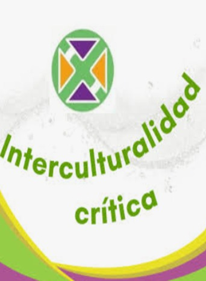

¿De qué trata?
Reconoce la diversidad cultural, lingüística, social y territorial, promoviendo el diálogo entre diferentes saberes y perspectivas.
Características principales:
Ejemplos:
1. Investigar tradiciones, relatos o conocimientos de una comunidad.
2. Comparar distintas formas culturales de relacionarse con la naturaleza.